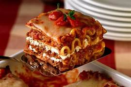

lasagna

Description
" This classic lasagna recipe is made with an easy meat sauce
as the base. Layer the sauce with noodles and cheese, then bake
until bubbly! This is great for feeding a big family and freezes
well, too." - source
- 1 pound ground beef chuck
- 1/2 medium onion, diced
- 2 cloves garlic, minced
- 1 can good-quality tomato sauce
- 1 tablespoon red or white wine vinegar
- Salt
- 1 tablespoon to 1/4 cup sugar
- 1 tablespoon Italian seasoning
- 1/2 pound dry lasagna noodles - requires 9 lasagna noodles - unbroken
- 15 ounces ricotta cheese
- Put a large pot of salted water (1 tablespoon of salt for every 2 quarts of water)
on the stovetop on high heat. It can take a while for a large pot of water to come to
a boil (this will be your pasta water), so prepare the sauce in the next steps while
the water is heating.
- In a large skillet heat 2 teaspoons of olive oil on medium-high heat. Add the
ground beef and cook until it is lightly browned on all sides. Remove the beef with
a slotted spoon to a bowl. Drain off all but a tablespoon of fat.
- Transfer the beef mixture to a medium-sized (3- to 4-quart) pot. Add the crushed
tomatoes, tomato sauce, and tomato paste to the pot. Add the parsley, oregano, and
Italian seasonings, adjusting the amounts to taste. Sprinkle with garlic powder and/or
garlic salt, to taste. Sprinkle with red or white wine vinegar. Stir in sugar, a tablespoon
at a time, tasting after each addition, to taste. Add salt to taste, and note that you will
later be adding Parmesan, which is salty. Bring the sauce to a simmer and then lower the heat
to maintain a low simmer. Cook for 15 to 45 minutes, stirring often. Scrape the bottom of the
pot every so often so nothing sticks to the bottom and scorches. Remove from heat.